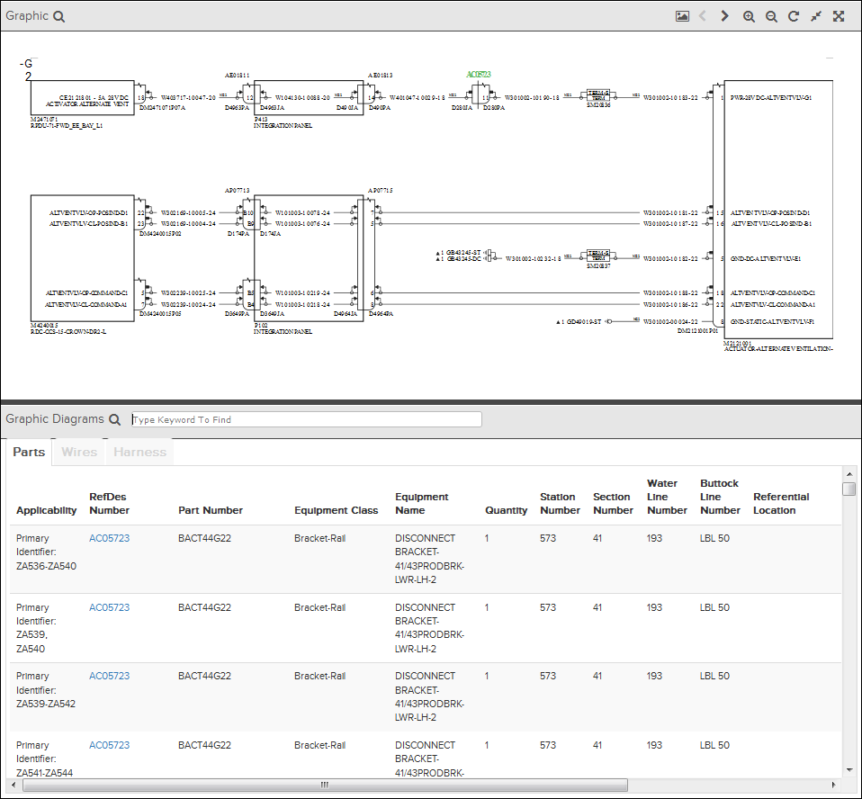
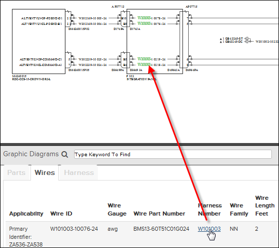

Les schémas de câblage des publications B787 WDM ont quelques fonctionnalités supplémentaires dans la fenêtre Graphique.
Lors de l'ouverture de ces diagrammes, la fenêtre de droite est divisée horizontalement et affiche le schéma de câblage dans la section supérieure et un ensemble d’onglet d'information dans la section inférieure.

Vue sur le schéma de câblage B787
La partie inférieure contient des onglets pour les tableaux de pièces, de cables et de faisceaux. Au-dessus des trois onglets il y a un filtre de recherche en texte libre .
Ce type d'affichage comprend une fonction hot-spot qui utilise les liens entre dans les données structurées. Par exemple, vous pouvez cliquer sur un numéro de harnais pour voir sa position en surbrillance dans le schéma de câblage:

Lien texte-graphique
Les outils disponibles pour du schéma de câblage dans la zone supérieure sont identiques à ceux décrites dans La fenêtre graphique.